CFA Reading Session 01 / Visual References
Figures
Queste sono le figure originali usate nel teleprompter dell'episodio 01. Sono separate qui per aprirle subito, senza cercarle dentro lo script.
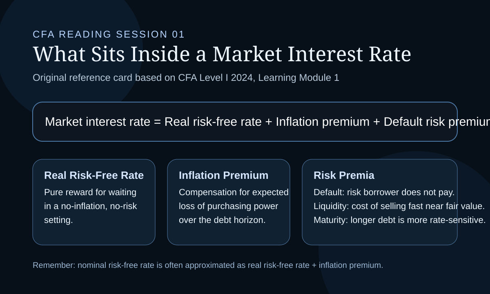
01. Interest rate components and risk premia.
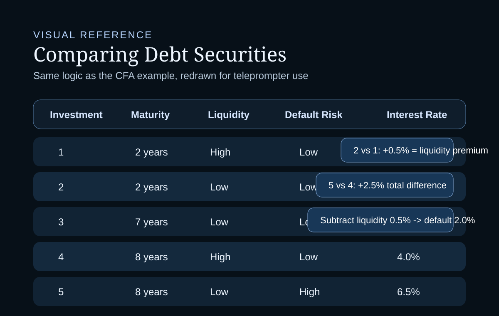
02. Debt security comparison table with inferred liquidity and default premia.
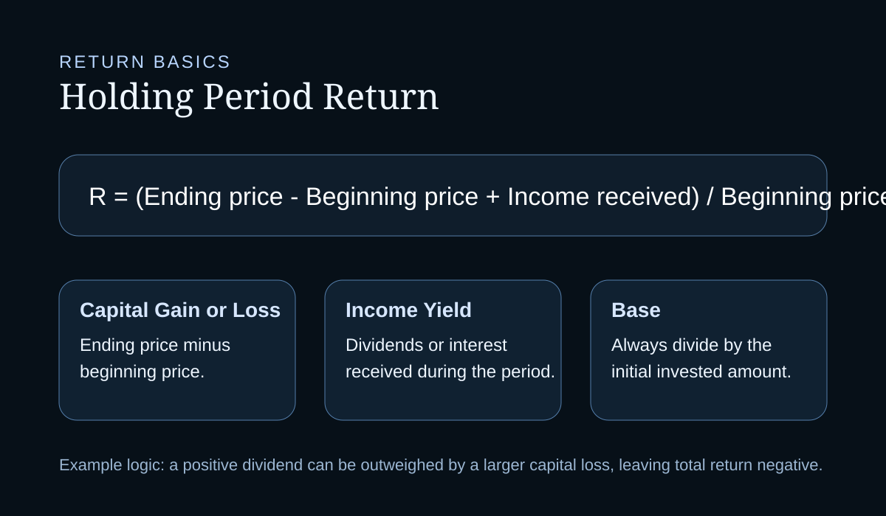
03. Holding period return formula and component breakdown.
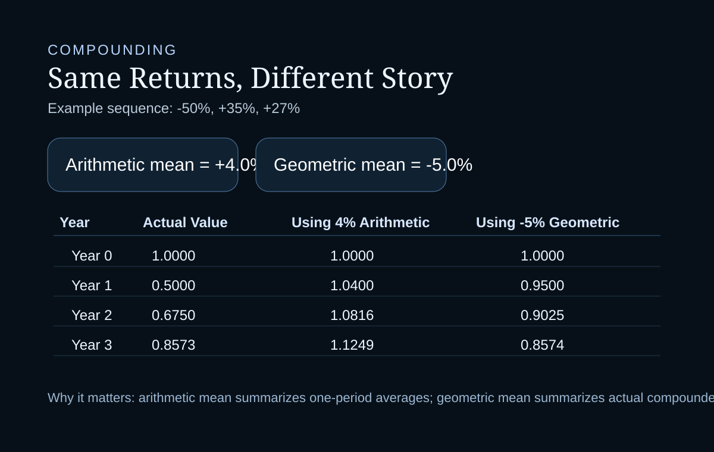
04. Arithmetic versus geometric mean compounding comparison.
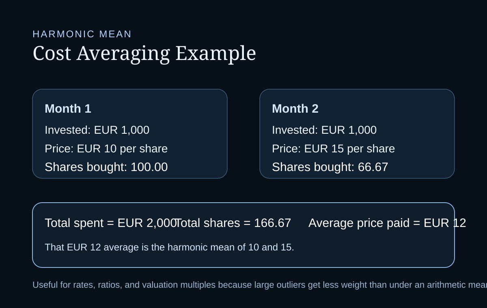
05. Cost averaging and harmonic mean.
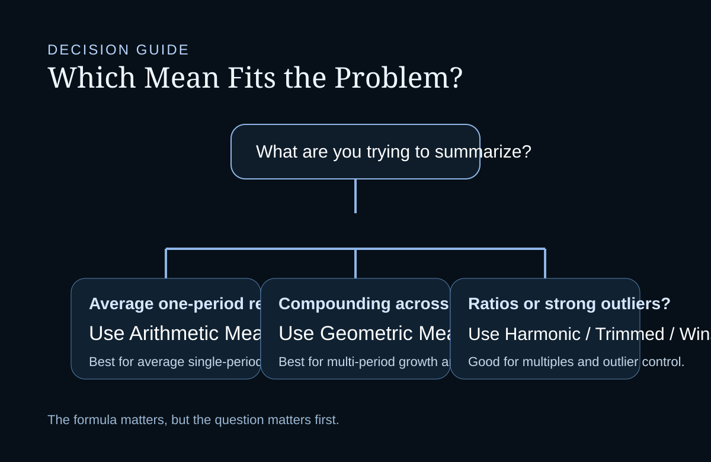
06. Decision guide for choosing arithmetic, geometric, or harmonic-style means.
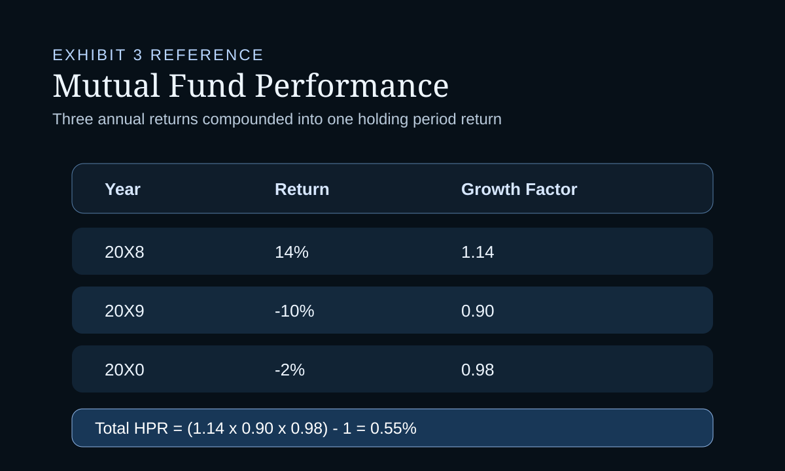
07. Mutual fund three-year holding period return example.
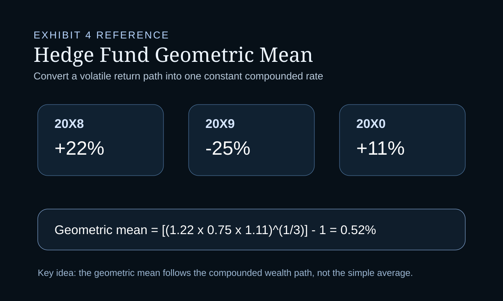
08. Hedge fund geometric mean return example.
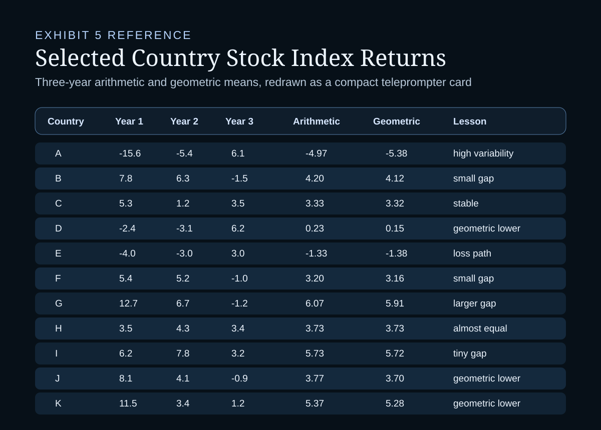
09. Country stock index arithmetic and geometric mean table.
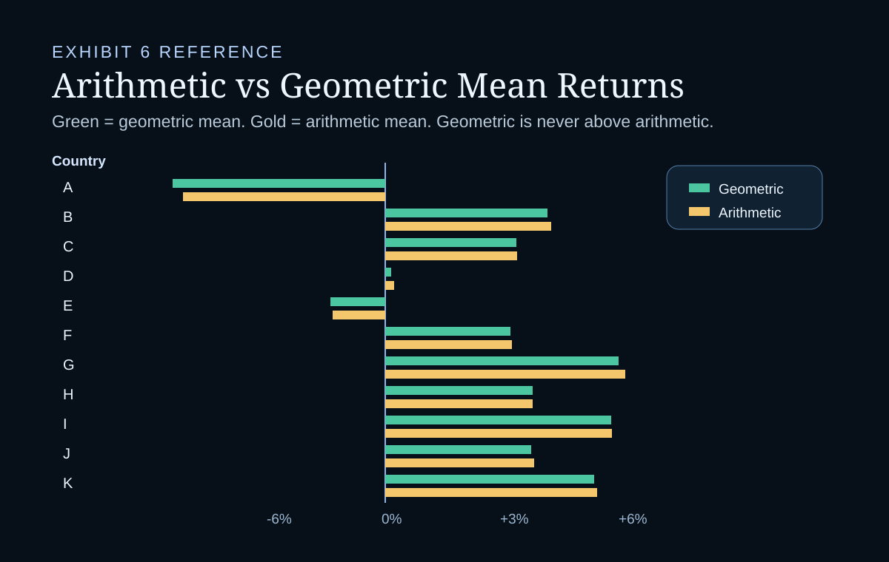
10. Country stock index arithmetic versus geometric mean chart.
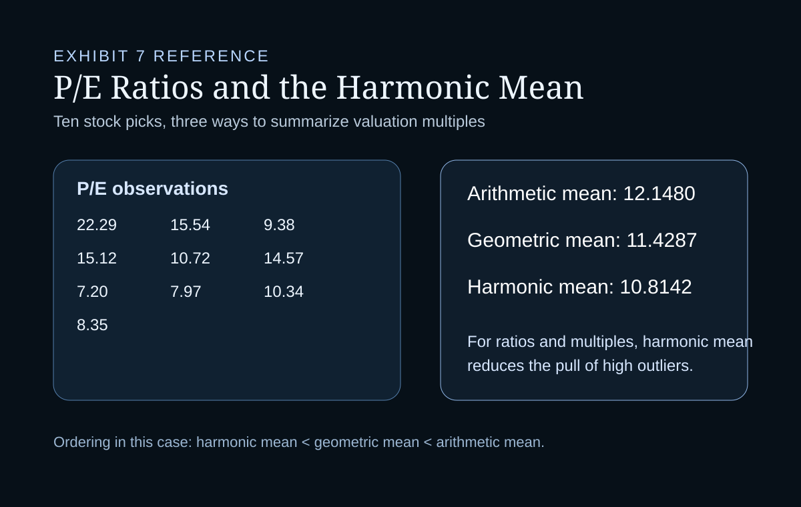
11. P/E ratio arithmetic, geometric, and harmonic mean example.
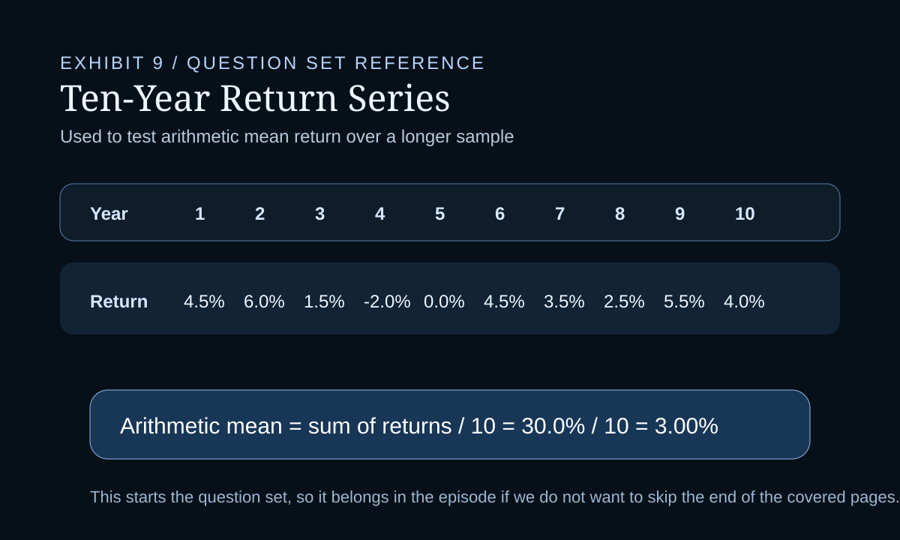
12. Question set ten-year return series.